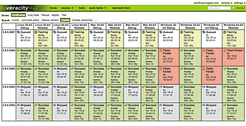
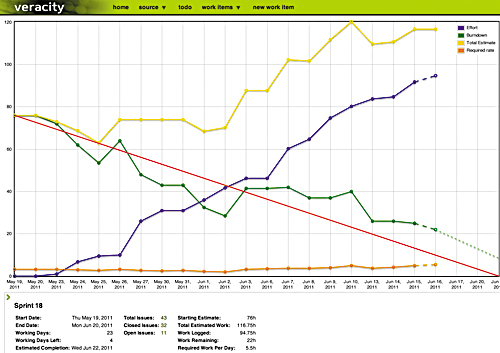

In addition to being a DVCS, Veracity has a built-in work item tracking system
for agile planning, build management, and tracking bugs. Full coverage of these features
is beyond the scope of this book but I’ll go ahead and include a couple of
pretty pictures.

